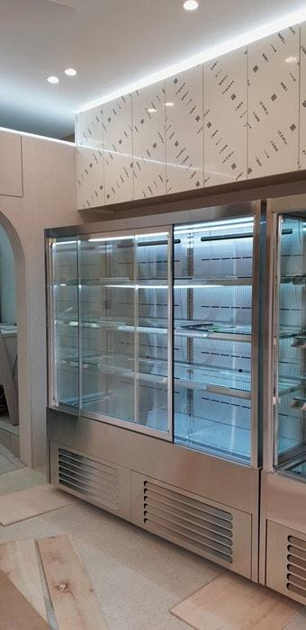
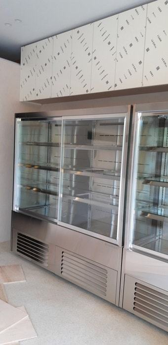
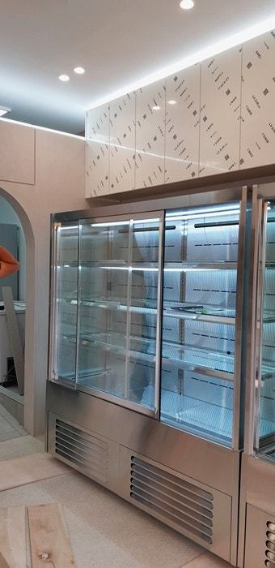
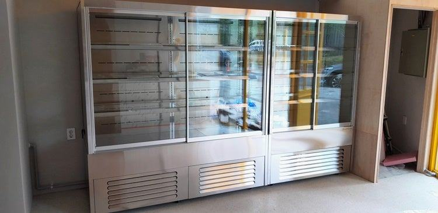
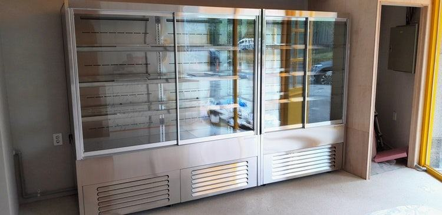
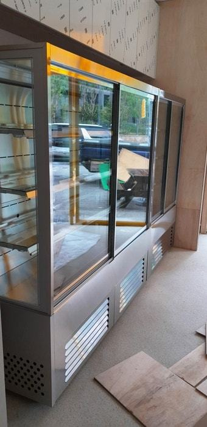
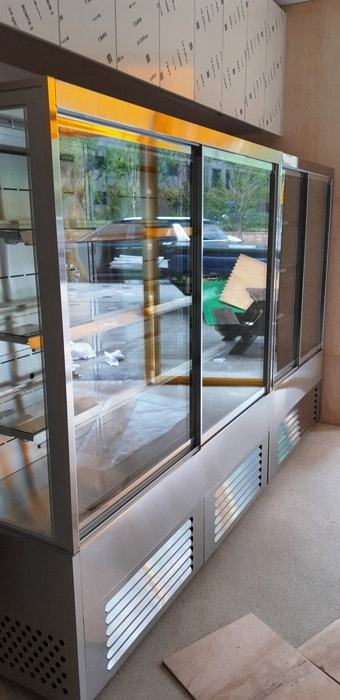
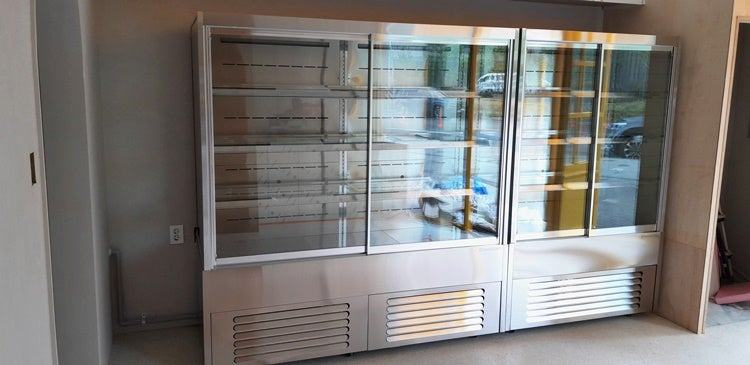

반찬(진열)쇼케이스
반찬가게 인테리어, 쇼케이스 자리부터 정해야 하는 이유

반찬가게 인테리어는 반찬쇼케이스의 위치와 크기를 먼저 확정한 뒤 시작하는 편이 안전합니다. 쇼케이스 자리가 정해져야 전용 콘센트와 배수, 바닥 마감, 벽 색과 조명 톤을 거기에 맞출 수 있고, 공사가 끝난 뒤 다시 뜯는 일을 막을 수 있습니다.
안녕하세요. 반찬가게 진열 냉장고를 매장 인테리어에 맞춰 설계하는 한성쇼케이스입니다.
반찬가게를 준비하시는 사장님들은 보통 인테리어 업체부터 정하고, 공사가 거의 끝날 무렵 쇼케이스를 알아보십니다.
순서상 자연스러워 보이지만, 현장에서는 이 순서 때문에 다시 공사하는 일이 생각보다 자주 생깁니다.
반찬가게에서 쇼케이스는 손님이 들어오자마자 가장 먼저 보는 가구이자, 전기와 배수가 필요한 설비입니다.
벽 색과 조명이 아무리 예뻐도 쇼케이스와 톤이 맞지 않거나, 콘센트가 엉뚱한 자리에 있으면 매장 전체가 어색해집니다.
오늘은 반찬가게 인테리어를 진행할 때 왜 쇼케이스 자리부터 정해야 하는지, 그리고 인테리어 업체와 어떤 순서로 맞춰 가면 좋은지 정리해 드리겠습니다.
1. 설비 공사가 쇼케이스를 따라갑니다
반찬쇼케이스는 전용 콘센트가 필요하고, 제품에 따라 배수 위치도 정해야 합니다. 쇼케이스 자리가 정해지지 않은 채 전기와 설비 공사가 끝나면, 나중에 바닥을 다시 까거나 벽에 전선을 따로 끌어와야 하는 일이 생깁니다.
기계실 열이 빠질 통로도 마찬가지입니다. 쇼케이스를 벽 쪽 가구 사이에 넣을 계획이라면 통풍구를 어디에 둘지 인테리어 도면 단계에서 같이 정해야 합니다.
- 쇼케이스 위치를 인테리어 도면에 먼저 표시하세요.
- 전용 콘센트와 배수 위치를 설비 공사 전에 정하세요.
- 통풍구 위치를 인테리어 업체와 공유하세요.
2. 입구에서 계산대까지 한 줄로
반찬가게 손님은 들어와서 쇼케이스를 따라 반찬을 고르고, 끝에서 계산하고 나갑니다. 이 흐름이 한 줄로 이어지면 손님끼리 부딪히지 않고 줄도 자연스럽게 섭니다.
쇼케이스 뒤쪽은 사장님이 반찬을 채우는 길입니다. 주방에서 나온 반찬통을 바로 채울 수 있도록 주방 출입구와 쇼케이스 뒤 통로를 가깝게 두면 바쁜 시간에 동선이 꼬이지 않습니다.


3. 벽 색, 바닥재와 프레임 맞추기
쇼케이스 프레임은 블랙, 화이트, 실버, 골드 등에서 고를 수 있습니다. 따뜻한 우드 톤 인테리어에 스테인리스를 더해 청결한 느낌을 주거나, 화이트 벽에 블랙 프레임으로 포인트를 주는 식으로 벽 색과 바닥재를 함께 놓고 정해 보세요.
인테리어 업체가 정한 마감 샘플을 쇼케이스 상담 때 함께 보여 주시면 훨씬 조화로운 조합을 고를 수 있습니다.
반대로 쇼케이스 색을 먼저 정하셨다면 인테리어 업체에 알려 벽과 카운터 마감을 거기에 맞추게 하세요.
4. 매장 조명과 쇼케이스 조명
쇼케이스 내부 조명은 주광색, 주백색, 전구색 등에서 고를 수 있습니다. 매장 천장 조명이 전구색으로 따뜻한데 쇼케이스만 차가운 주광색이면 반찬 색이 따로 노는 느낌이 듭니다.
천장 조명이 쇼케이스 유리에 그대로 비치면 반사 때문에 반찬이 잘 안 보입니다. 쇼케이스 바로 위 천장 조명은 각도를 조절하거나 위치를 살짝 옮기도록 인테리어 단계에서 요청해 두세요.
- 천장 조명과 쇼케이스 조명 색을 같은 계열로 맞추세요.
- 쇼케이스 유리에 천장 조명이 비치지 않는지 확인하세요.
체크리스트
- 쇼케이스 위치와 크기를 도면에 먼저 표시
- 전용 콘센트·배수·통풍구 위치
- 입구-쇼케이스-계산대 손님 흐름
- 주방과 쇼케이스 뒤 통로 연결
- 벽·바닥 마감과 프레임 색 조합
- 천장 조명과 쇼케이스 조명 톤
현장에서 자주 보는 경우: 맛은 자신 있는데 손님이 들어왔다 그냥 나갈 때
새벽 시장에서 재료를 사 와 정성껏 반찬을 만드는데도 손님이 들어왔다 그냥 나간다는 고민을 자주 듣습니다.
매장에 가 보면 반찬 맛보다 보이는 방식에 문제가 있는 경우가 많습니다. 쇼케이스 조명이 어둡거나, 수분 많은 반찬 때문에 유리에 김이 서려 음식이 잘 보이지 않는 모습이죠.
기성 제품 중에서 크기만 대충 맞춰 들인 경우 매장 인테리어와 따로 노는 일도 많습니다. 이럴 때는 프레임 색, 조명, 단차, 유리 사양을 매장 톤과 용기 크기에 맞춰 다시 잡아야 합니다.
상담 때 벽면 색상과 바닥재까지 알려 주시면 매장과 가장 잘 어울리는 조합을 함께 찾아 드립니다.










| 구분 | 커스터마이징 항목 |
|---|---|
| 프레임 색상 | 블랙, 화이트, 실버, 골드 등 |
| 내부 조명 | 주광색, 주백색, 전구색 등 맞춤형 LED |
| 단차 및 선반 | 1단 ~ 4단, 이동식 선반 |
| 유리 사양 | 페어 유리, 김 서림 방지 기능 |
자주 묻는 질문
인테리어 공사가 이미 시작됐는데 쇼케이스를 지금 정해도 되나요?
설비 공사 전이라면 충분히 맞출 수 있습니다. 쇼케이스 위치와 크기를 빨리 확정해 인테리어 업체에 전기·배수 위치를 알려 주시는 게 좋습니다.
쇼케이스 색은 인테리어와 같은 색으로 해야 하나요?
꼭 같을 필요는 없습니다. 벽과 같은 톤으로 맞춰 일체감을 주거나, 다른 색으로 포인트를 줄 수 있으니 마감 샘플을 함께 놓고 정해 보세요.
작은 반찬가게도 쇼케이스를 맞춤으로 하는 게 나을까요?
작은 매장일수록 벽 길이와 통로 폭을 정확히 써야 해서 맞춤 제작의 이점이 큽니다. 실측 치수와 매장 사진을 보내 주시면 구성을 먼저 제안해 드립니다.
매장 조건에 맞춰 만드는 한성쇼케이스
원하시는 제품 사진과 설치할 공간 사진만 보내 주셔도 매장에 맞는 구성을 추천해 드립니다.
- 전국 240여 개 A/S 전담 센터 운영
- 본사 대량 자재 매입으로 품질 대비 합리적인 가격
- 유럽제·삼성 냉각 콤프레셔 적용
- 국내 최초 쇼케이스 전문 디자이너 상주
매장 폭과 원하는 진열 구성을 알려 주세요. 실측과 견적을 안내해 드립니다.
031-986-2458